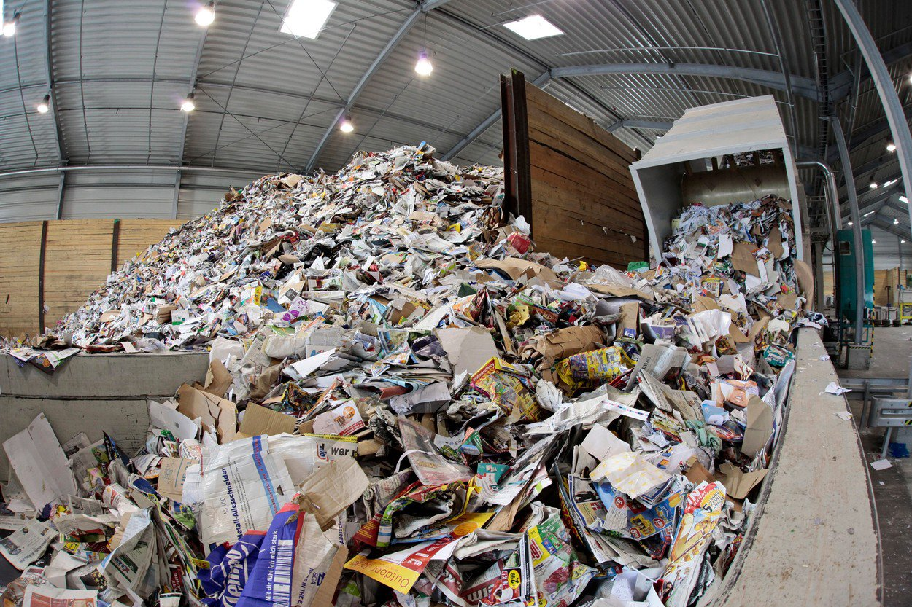

<!DOCTYPE html>
<html>
<body>
  
  <div style="background-image: url('234.jpg');">

  </div>

<center>

</center>


</body>
</html>
<style>
ul {
  list-style-type: none;
  margin:0;
  padding:0;
  overflow: hidden;
  background-color: #333;
}

li {
  float: center;
}

li a {
  display: block;
  color: white;
  text-align: center;
  padding: 14px 16px;
  text-decoration: none;
}

li a:hover:not(.active) {
  background-color: #111;
}

.active {
  background-color: #4CAF50;
}
</style>

<body>

<ul> 
  <li><a class="active" href="Wbsite.html">Home</a></li>
  <li><a href="Page2.html">Our Mission</a></li>
  <li><a href="#contact">About Us</a></li>
 
</ul>

</body>
</html>

<meta name="viewport" content="width=device-width, initial-scale=1">
<style>
* {box-sizing: border-box;}
body {font-family: Verdana, sans-serif;}
.mySlides {display: none;}
img {vertical-align: middle;}

/* Slideshow container */
.slideshow-container {
  max-width: 1000px;
  position: relative;
  margin: auto;
}

/* Caption text */
.text {
  color: #f2f2f2;
  font-size: 15px;
  padding: 8px 12px;
  position: absolute;
  bottom: 8px;
  width: 100%;
  text-align: center;
}

/* Number text (1/3 etc) */
.numbertext {
  color: #f2f2f2;
  font-size: 12px;
  padding: 8px 12px;
  position: absolute;
  top: 0;
}

/* The dots/bullets/indicators */
.dot {
  height: 15px;
  width: 15px;
  margin: 0 2px;
  background-color: #bbb;
  border-radius: 50%;
  display: inline-block;
  transition: background-color 0.6s ease;
}

.active {
  background-color: #717171;
}

/* Fading animation */
.fade {
  -webkit-animation-name: fade;
  -webkit-animation-duration: 1.5s;
  animation-name: fade;
  animation-duration: 1.5s;
}

@-webkit-keyframes fade {
  from {opacity: .4} 
  to {opacity: 1}
}

@keyframes fade {
  from {opacity: .4} 
  to {opacity: 1}
}

/* On smaller screens, decrease text size */
@media only screen and (max-width: 300px) {
  .text {font-size: 11px}
}
</style>
</head>
<body>
	
	<center>

<h2><font color="pink"> Slideshow</font></h2> 
	
</cenpink

<div class="slideshow-container">

<div class="mySlides fade">
  <div class="numbertext">1 / 3</div>
  
  
</div>

<div class="mySlides fade">
  <div class="numbertext">2 / 3</div>
  
 
</div>

<div class="mySlides fade">
  <div class="numbertext">3 / 3</div>
  
 
</div>

</div>
<br>

<div style="text-align:center">
  <span class="dot"></span> 
  <span class="dot"></span> 
  <span class="dot"></span> 
</div>

<script>
var slideIndex = 0;
showSlides();

function showSlides() {
  var i;
  var slides = document.getElementsByClassName("mySlides");
  var dots = document.getElementsByClassName("dot");
  for (i = 0; i < slides.length; i++) {
    slides[i].style.display = "none";  
  }
  slideIndex++;
  if (slideIndex > slides.length) {slideIndex = 1}    
  for (i = 0; i < dots.length; i++) {
    dots[i].className = dots[i].className.replace(" active", "");
  }
  slides[slideIndex-1].style.display = "block";  
  dots[slideIndex-1].className += " active";
  setTimeout(showSlides, 2000); // Change image every 5 seconds
}
</script>

</body>
</html> 

<h3><font color="blue">The costs of using paper inefficiently in the workplace are too significant to be ignored. The expenses from supplies such as toner and paper, as well as equipment maintenance can add up fast. Perhaps more significant than these costs is all the staff time wasted adjusting printers and copiers, filing documents, and then trying to find them again—often just to throw them away.Using less paper can save your organization money and can also help with several environmental problems. Of all trees harvested for industrial use, 42% go to making paper. Unfortunately, the degradation of forests is only part of the story. The pulp and paper industry is also the largest industrial user of water, the biggest water polluter, and the third largest emitter of global warming pollution in most industrialized nations</font></h3>

<iframe width="1200" height="500" src="https://www.youtube.com/embed/oha3_J61-7E" frameborder="0" allow="accelerometer; autoplay; encrypted-media; gyroscope; picture-in-picture" allowfullscreen></iframe>
